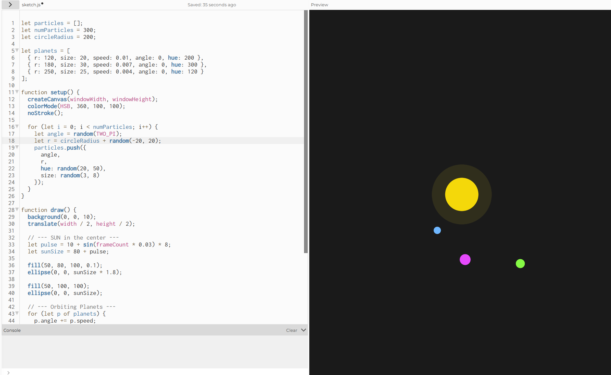
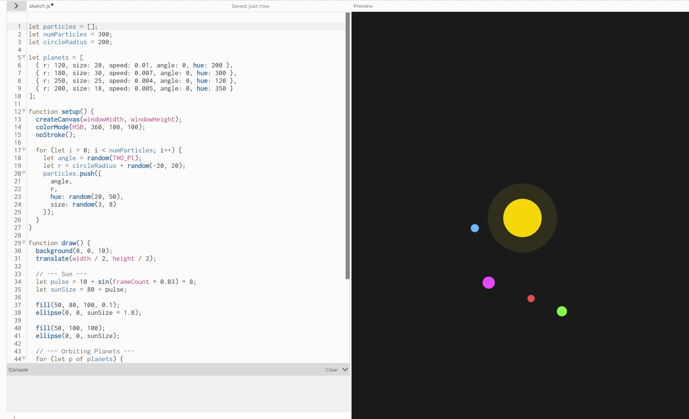
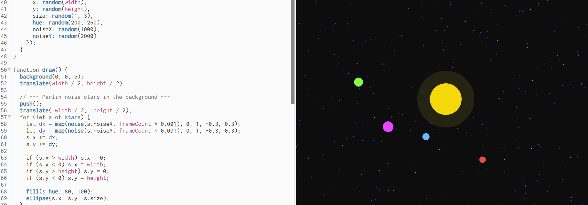
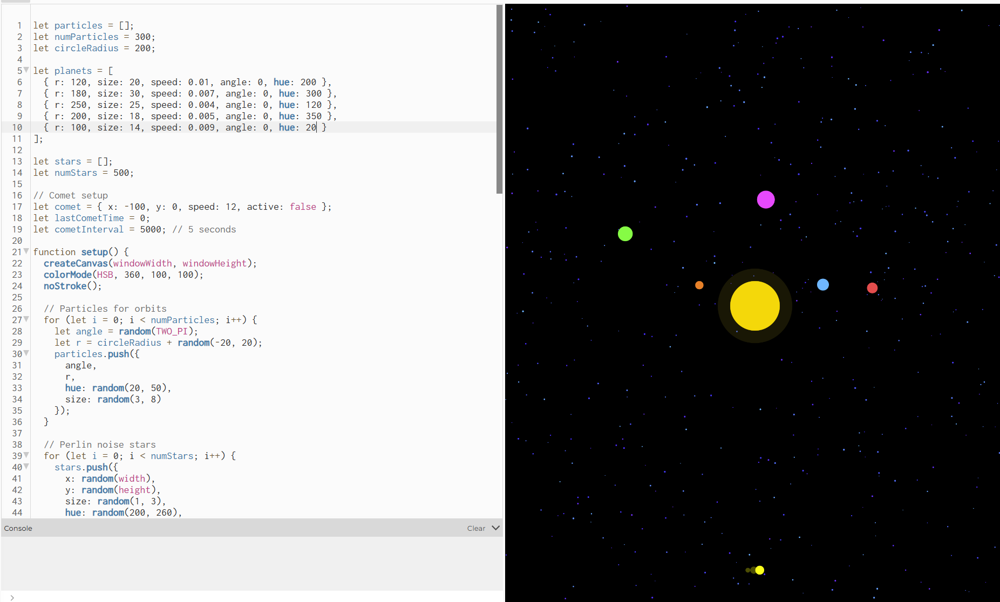
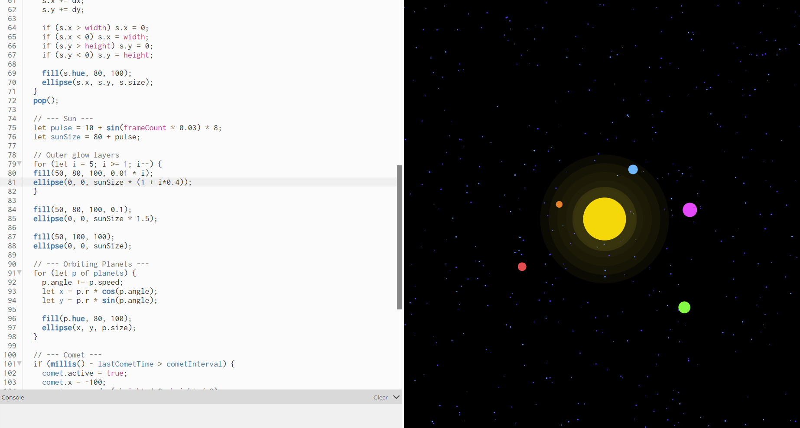

Roxanna's Week 10 P5js Homework
Planet Orbit and Starfield
For this assignment, I had a really great time trying to figure how to tie in the oscillation techiniques we learned during class. Based on the prompt you provided I wanted to explore the idea of planets orbiting a sun for the repeated motion and a comet passing through periodically for the predetermined interval.
Since I was familiar with the rotation techniques that were shown during the rotating oscillation exercise, I wanted to apply those ideas but with a planetary orbit. To start off I created a sun-like object in the center and added three planets orbiting the sun.

After playing around with the code a bit more, I added another planet in a different color, size, and speed for variety.

Once I achieved a calm, pulsing orbit with the particles, I wanted to incorporate the logo of the company I currently work at — Spacedock. While it seemed like a simple task, this actually proved to be the most challenging part. Every time I added the logo, it appeared stretched vertically. After several rounds of trial and error, I finally figured out how to properly adjust its width and height.

Once I achieved a calm, pulsing orbit with the particles, I wanted to incorporate the logo of the company I currently work at — Spacedock. While it seemed like a simple task, this actually proved to be the most challenging part. Every time I added the logo, it appeared stretched vertically. After several rounds of trial and error, I finally figured out how to properly adjust its width and height.

Once I achieved a calm, pulsing orbit with the particles, I wanted to incorporate the logo of the company I currently work at — Spacedock. While it seemed like a simple task, this actually proved to be the most challenging part. Every time I added the logo, it appeared stretched vertically. After several rounds of trial and error, I finally figured out how to properly adjust its width and height.
